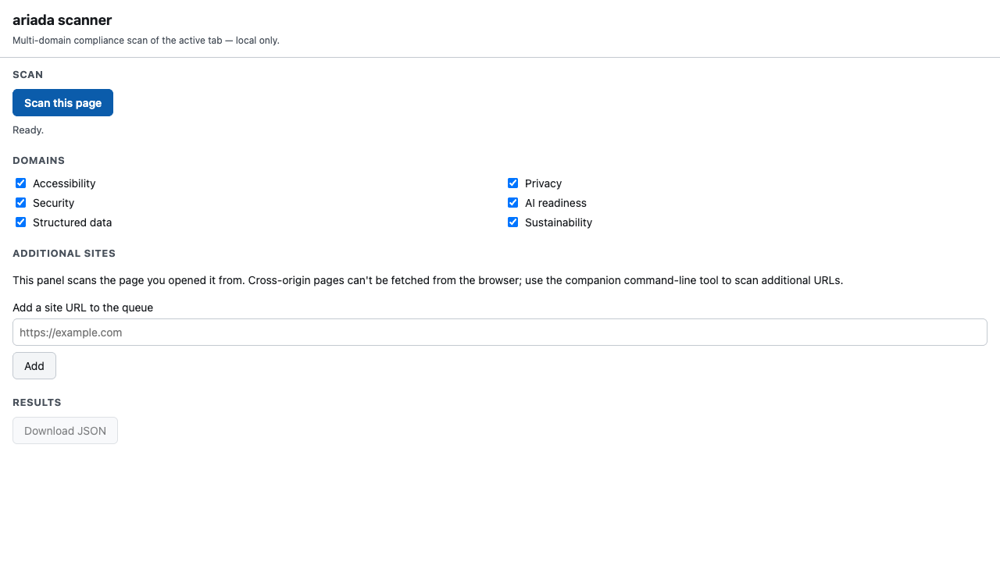
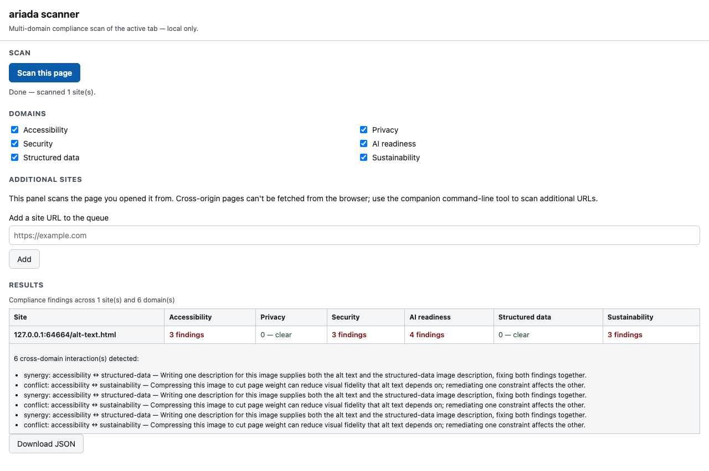
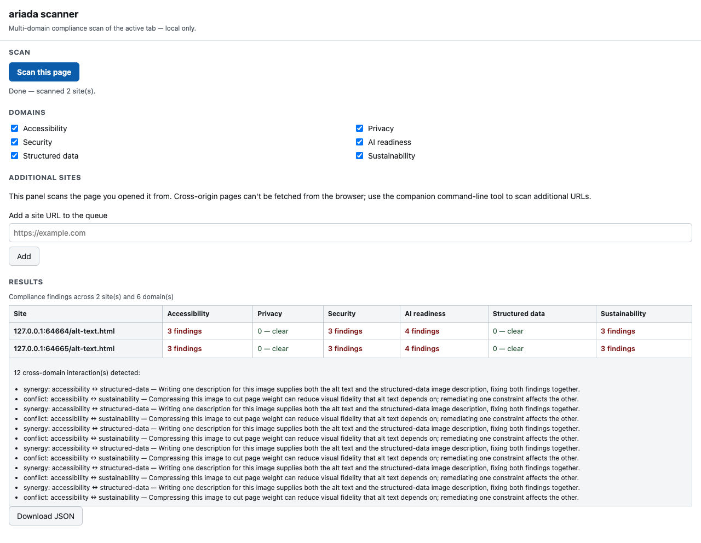
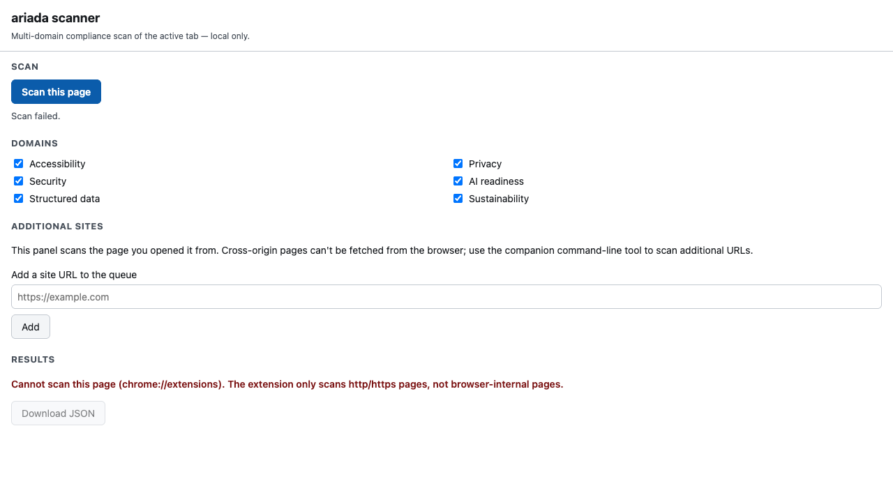
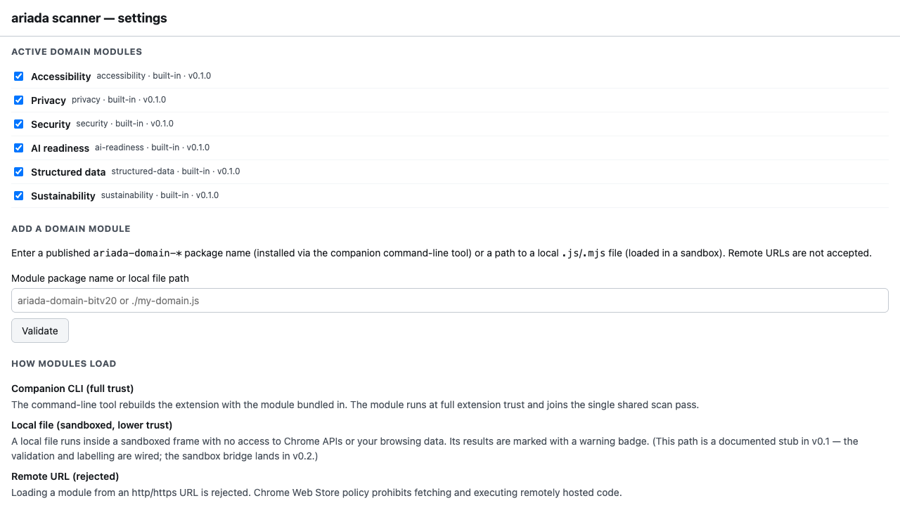
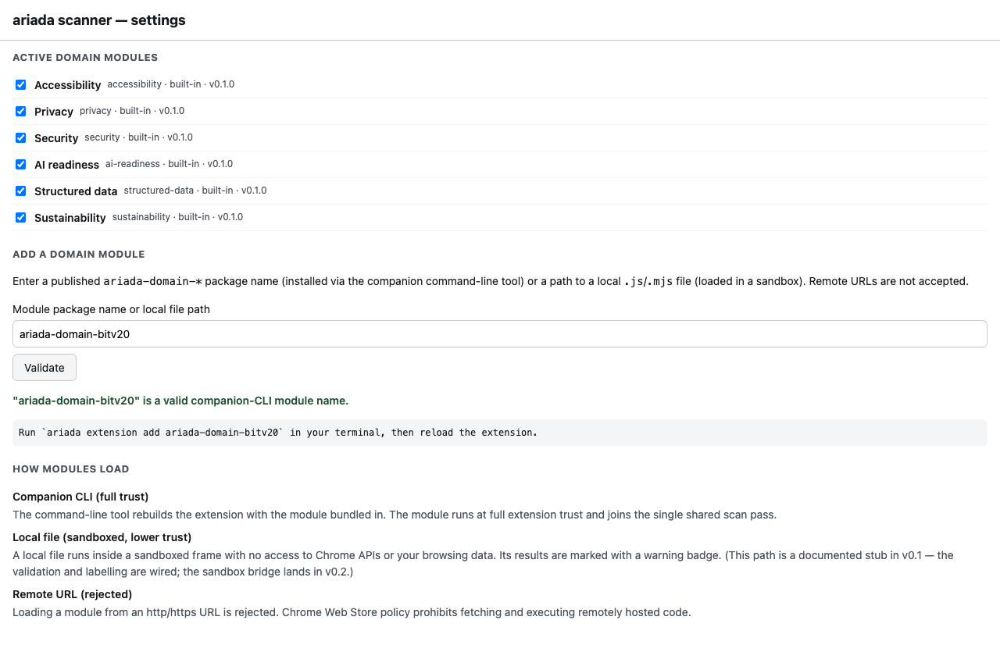

What this module is
The Ariada browser extension is a product surface, not an
engine: it is a thin Chrome side-panel UI that calls the same open-source scan engine
(@ariada-org/core-engine via the in-page adapter core-browser)
the CLI and CI Action use. You open a page, click Scan this page, and it reports
findings across six compliance domains in a grid — no account, no upload, no server.
packages/ariada-extension. Every screenshot below is the actual panel
rendered by the end-to-end Playwright harness, not a Figma comp.
- Type
- Browser extension (Chrome side panel + on-page launch button)
- Where it lives
- Source in the monorepo (
packages/ariada-extension); ships to the Chrome Web Store as the consumer install target - What it runs
- The six OSS domain analyzers on the current document, in the browser; cross-origin pages can't be fetched from a page context, so additional URLs are handed to the companion CLI
- Status
- Built & test-covered surface; Chrome Web Store listing not yet published (gap)
Who uses it & why
| Role | How they use it | Value |
|---|---|---|
| Front-end / QA developer | Quick in-browser check of the page they're building before opening a PR | High — zero-setup, no CLI/CI needed |
| Accessibility engineer | Spot-audit any live page across 6 domains, export JSON | High |
| Compliance / procurement reviewer | Sanity-check a vendor or public-sector site against EAA-scoped rules | Medium-High |
| Site owner (non-developer) | One-click "how bad is my page" with plain findings | Medium |
Strategically the extension is a top-of-funnel adoption driver: the
lowest-friction way to experience the scanner, designed to convert curious users into
CLI/CI adopters and, eventually, paying .ai customers.
Distribution — free and open source
The Ariada browser extension and the scan engine it runs are free and open source under the EUPL-1.2 licence. There is no account and no upload to use the in-panel single-page scan across all six compliance domains.
| Capability | Availability |
|---|---|
| Single-page six-domain scan in the panel | Free · open source |
| Local JSON export of findings | Free · open source |
| The scan engine, rule packs and EAA evidence emitters (npm) | Free · open source |
| Companion command-line tool for batch / cross-origin scans | Free · open source |
Getting started
- Discover — Chrome Web Store listing and npm.
- First value — install, scan the page you're on, see six domains of findings in seconds.
- Habit — use it in daily development and QA; export JSON; add the command-line tool for batch scans.
- Integrate — wire the scan into continuous integration with the companion Action.
Documentation & help — current state
- Docs site
- An Astro Starlight site exists at
apps/docs(framework decided in an ADR); per-package usage pages are mostly unfilled — the extension needs a quick-start + permissions explainer page. - Package README
- Present for the extension; most sibling packages still lack one (npm landing pages are bare) — flagged as the top docs follow-up.
- Recommended form
- One Starlight "Browser extension" guide (install → scan → read findings → export → when to use the CLI), plus a 60-second store demo clip and a permissions/privacy note (local-only, no upload).
AI chat & digital-adoption helpers — plan
- In-panel AI assistant — "explain this finding", "show me the fix", "draft the accessibility statement" — calling a managed model only on user action (kept off the deterministic scan path, consistent with the no-AI-in-core design).
- Digital-adoption walkthrough — a first-run guided tour and contextual tooltips (a lightweight DAP layer) so a non-developer understands each domain column.
Screenshots — click any image to open it full size
From the real Playwright end-to-end harness at 1280 px (the deployed side panel is ~400 px wide). Each thumbnail opens a full-size, zoomable overlay.






Assessment summary
Full UI assessment (2026 best-practice audit, competitor screen-to-screen, user pains, recommendations) is in assessment.html. Headline: the panel passes its own axe-core gate (the scanner must be accessible — "cobbler's shoes"), with open gaps around a 375 px mobile/side-panel-width capture and the unpublished Web Store listing. Competitors compared: axe DevTools, WAVE, Lighthouse, Accessibility Insights.